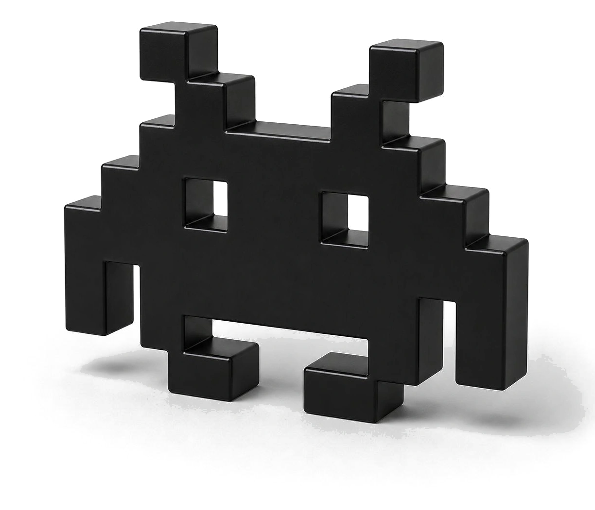
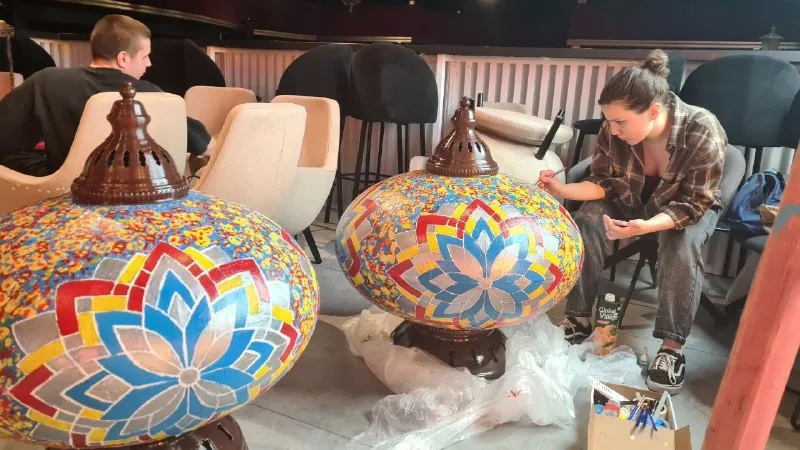
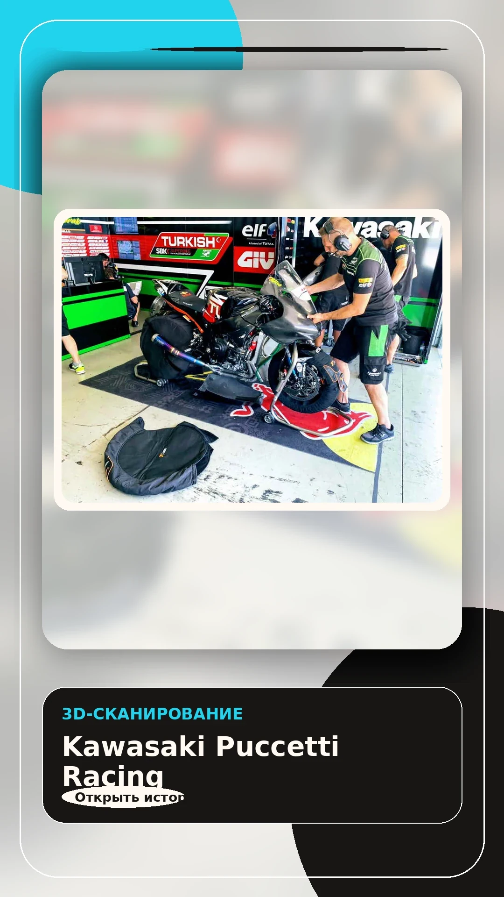
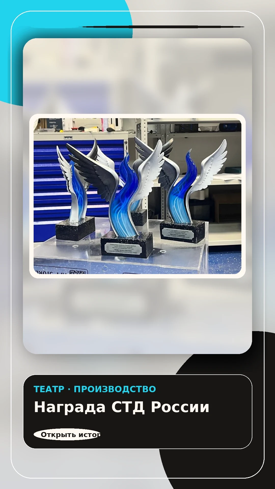
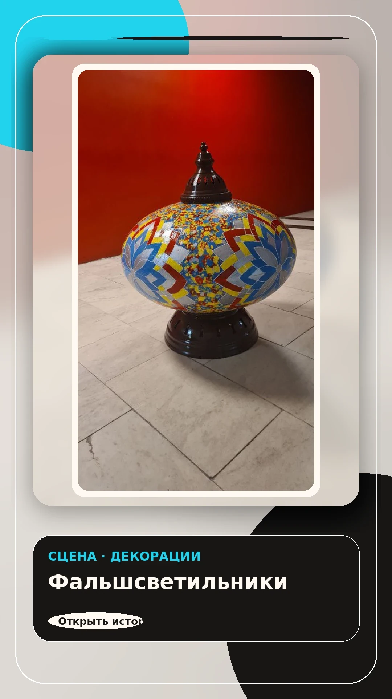
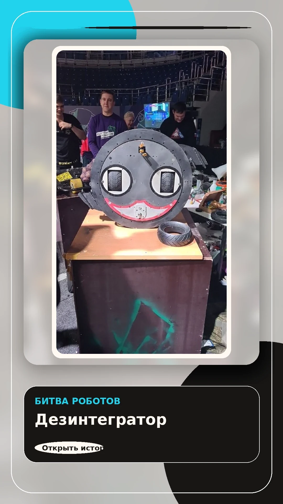

3D-печать
Прототипы, корпуса, крепления, макеты, функциональные детали и малые серии. Подбираем технологию и материал под назначение.

Step3D Lab Обсудить задачу3D manufacturing lab · Москва
3D-печать, 3D-сканирование, реверс-инжиниринг, прототипирование, промдизайн и макеты — в одном понятном процессе без лишних страниц и обещаний.

Подходит для производственных задач, ремонта, прототипов, выставочных объектов, образования и кастомных изделий.
Что делаем
Прототипы, корпуса, крепления, макеты, функциональные детали и малые серии. Подбираем технологию и материал под назначение.
Оцифровка формы существующих деталей и объектов для контроля, восстановления, доработки или визуализации.
Восстановление геометрии по образцу, фото и ключевым размерам, подготовка CAD-модели и файла для производства.
Быстрые итерации: проверить посадку, прочность, эргономику и внешний вид до запуска партии.
Внешние концепты, демонстрационные модели, награды, арт-объекты, сценические и выставочные элементы.
Процесс
Фото, STL/STEP, эскиз, размеры, назначение, количество и срок.
Посадки, нагрузки, точность, поверхность, материал и необходимость скана.
Печать теста, моделирование, сканирование, доработка или подготовка партии.
Портфолио

Функциональные элементы, где важны посадка, геометрия и повторяемость.

Макеты и объекты для мероприятий, брендов и публичных показов.

Объекты сложной формы для декораций, света и визуальной среды.

Корпуса, учебные наборы и детали для лабораторий и мастер-классов.
Быстрый бриф
Форма не отправляет данные на сервер в preview: она собирает текст заявки, который можно скопировать или отправить в Telegram.
FAQ
Да. Можно начать с фото, эскиза, размеров или описания. Мы подскажем, нужен ли скан или CAD-моделирование.
Цена зависит от геометрии, материала, количества, срочности, точности и постобработки. Для честной оценки нужны вводные.
Для печати — STL, 3MF, OBJ. Для инженерной работы — STEP, чертёж, фото образца и ключевые размеры.
Да, после прототипа можно подготовить повторяемый процесс и рассчитать партию.